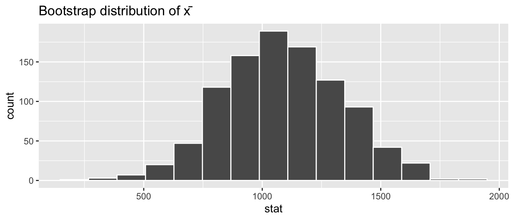
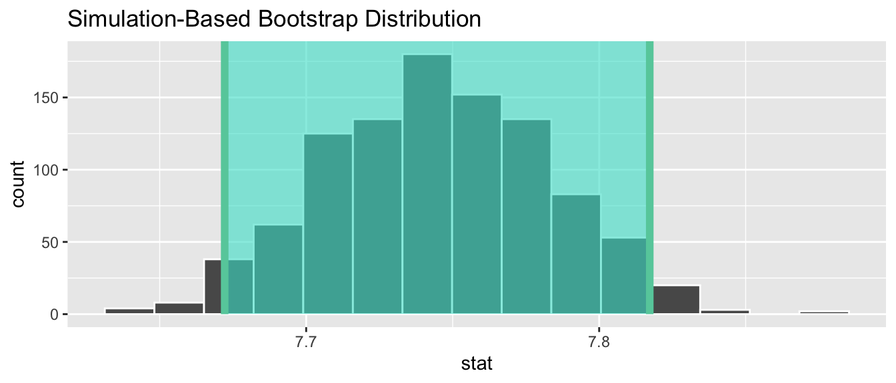
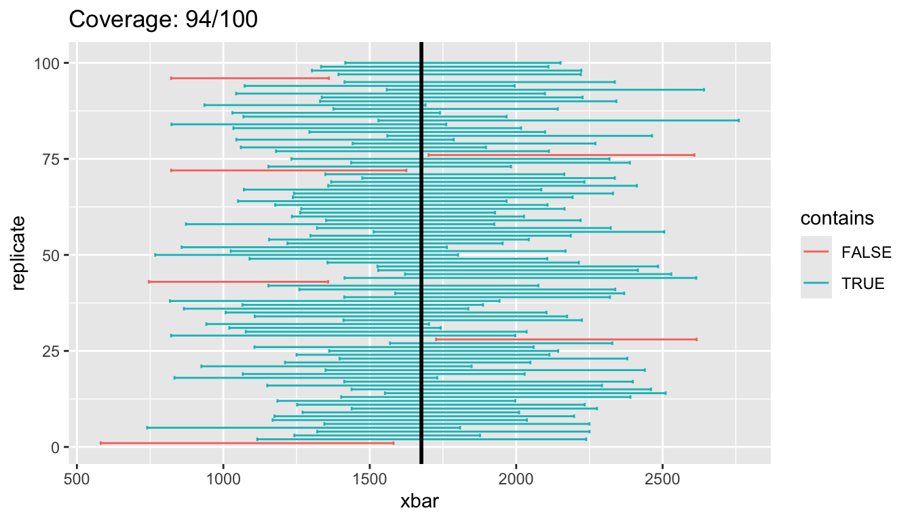
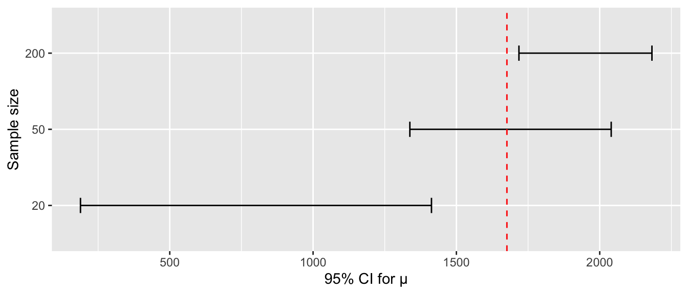

library(dplyr)
library(ggplot2)
library(infer)
library(moderndive)
library(volcanoes)
library(steves)
library(olympicAthletes)
library(fivethirtyeight)
set.seed(76)
samp <- volcanoes |> rep_slice_sample(n = 50) |> ungroup()
mu <- mean(volcanoes$elevation, na.rm = TRUE)Solutions for the end-of-chapter exercises in Chapter 8 — Confidence Intervals. Datasets: volcanoes, episodes (steves), olympic_athletes, plus bob_ross (fivethirtyeight).
TipSection coverage at a glance
Exercises per section — count of prompts that touch each book section.
| Book section | # of exercises |
|---|---|
| 8.1 Tying the sampling distribution to estimation | 5 |
| 8.2 Estimation with the bootstrap | 10 |
| 8.3 Additional remarks about the bootstrap | 1 |
| 8.4 Case study: yawning (two-sample) | 4 |
| Critical thinking / synthesis (cross-section) | 13 |
Exercises by subsection — which prompts target each finer-grained subsection.
| Subsection | Exercises |
|---|---|
| 8.1.2 Normal distribution / 8.1.3 The confidence interval | EX8.2, EX8.3, EX8.4 |
| 8.1.4 The t distribution | EX8.1 |
| 8.1.5 Interpreting confidence intervals | EX8.5 |
| 8.2.1 Bootstrap samples (resampling) | EX8.6 |
8.2.3 infer workflow practice |
EX8.13, EX8.14, EX8.15 |
| 8.2.4 Bootstrap CIs — percentile method | EX8.7, EX8.10, EX8.11, EX8.12 |
| 8.2.4 Bootstrap CIs — standard-error method | EX8.8, EX8.9 |
| 8.3.2 Rate of convergence / empirical coverage | EX8.16 |
| 8.4 Case study: yawning — two-sample CIs (mean & proportion) | EX8.17, EX8.18, EX8.19, EX8.20 |
| Critical thinking / synthesis (CI interpretation, sample size, bootstrap concepts) | EX8.21, EX8.22, EX8.23, EX8.24, EX8.25, EX8.26, EX8.27, EX8.28, EX8.29, EX8.30, EX8.31, EX8.32, EX8.33 |
A note on coverage. Section 8.3 (Additional remarks about the bootstrap) is mostly philosophical — it explains when and why the bootstrap works rather than introducing new methodology. EX8.16 exercises Section 8.3.2 (rate of convergence) by simulation. The critical-thinking section bundles all the cross-cutting prompts (interpretation, sample-size effects, when-bootstrap-fails, synthesis).
Difficulty: ★ warm-up · ★★ standard · ★★★ critical thinking.
Theory-based CIs
NoteEX8.1 — show question
EX8.1 (★) Take a single random sample of \(n = 50\) from volcanoes. Compute \(\bar{x}\), \(s\), and a theory-based 95% t-CI for the mean elevation. Hint: xbar ± qt(0.975, df = n-1) * s/sqrt(n).
Solution (reference: Section 8.1.4 “The confidence interval”).
samp |>
summarize(
xbar = mean(elevation, na.rm = TRUE),
s = sd(elevation, na.rm = TRUE),
n = sum(!is.na(elevation))
) |>
mutate(
lower = xbar - qt(0.975, df = n - 1) * s / sqrt(n),
upper = xbar + qt(0.975, df = n - 1) * s / sqrt(n)
)# A tibble: 1 × 5
xbar s n lower upper
<dbl> <dbl> <int> <dbl> <dbl>
1 1081. 1759. 50 581. 1581.
NoteEX8.2 — show question
EX8.2 (★★) Recall \(\mu \approx\) population-mean elevation from ?@sec-sampling. Does your CI contain \(\mu\)? Why isn’t this a guarantee?
Solution (reference: Section 8.1.4 “Interpreting confidence intervals”).
With 95% confidence, most (≈95%) of CIs from repeated samples contain \(\mu\) — but any one sample’s CI either does or doesn’t. We hope this one does.
mu[1] 1676.235
NoteEX8.3 — show question
EX8.3 (★) What is the standard error of \(\bar{x}\) in EX8.1, expressed using only the sample? Why \(s\) rather than \(\sigma\)?
Solution (reference: Section 8.1.2 “The t distribution”, standard error in practice).
SE = \(s / \sqrt{n}\). We use \(s\) (sample SD) because \(\sigma\) is unknown — we only have the sample. The t distribution corrects for the extra uncertainty introduced by estimating \(\sigma\).
NoteEX8.4 — show question
EX8.4 (★★) Repeat EX8.1 but with \(n = 200\). By what factor does the CI shrink in width? Verify with \(\sqrt{50/200}\).
Solution (reference: Section 8.1.4 “The confidence interval”, \(1/\sqrt{n}\)).
Width shrinks by \(\sqrt{50/200} = 1/2\).
set.seed(76)
samp_200 <- volcanoes |> rep_slice_sample(n = 200) |> ungroup()
samp_200 |>
summarize(
xbar = mean(elevation, na.rm = TRUE),
s = sd(elevation, na.rm = TRUE),
n = sum(!is.na(elevation))
) |>
mutate(width = 2 * qt(0.975, df = n - 1) * s / sqrt(n))# A tibble: 1 × 4
xbar s n width
<dbl> <dbl> <int> <dbl>
1 1544. 1737. 200 485.
NoteEX8.5 — show question
EX8.5 (★) A peer says “my 95% CI is (1100, 1900) m, which means there’s a 95% probability that \(\mu\) is in (1100, 1900).” Refute in 2 sentences using the chapter’s interpretation.
Solution (reference: Section 8.1.4 “Interpreting confidence intervals”).
\(\mu\) is fixed (a single unknown number), not random. The CI is what’s random across hypothetical resamples. The correct interpretation: “If we repeated this procedure many times, ~95% of the resulting CIs would contain \(\mu\).”
Bootstrap CIs for a mean
NoteEX8.6 — show question
EX8.6 (★★) With the same sample samp from EX8.1, build a bootstrap distribution of \(\bar{x}\) with 1000 resamples using infer. Plot it.
Solution (reference: Section 8.2.2 “The infer package workflow”).
boot_dist <- samp |>
specify(response = elevation) |>
generate(reps = 1000, type = "bootstrap") |>
calculate(stat = "mean")
visualize(boot_dist) + labs(title = "Bootstrap distribution of x̄")
NoteEX8.7 — show question
EX8.7 (★★) Compute the percentile-method 95% CI from boot_dist. Compare to your theory-based CI in EX8.1.
Solution (reference: Section 8.2.3 “Confidence intervals using bootstrap samples”, percentile method).
boot_dist |> get_confidence_interval(level = 0.95, type = "percentile")# A tibble: 1 × 2
lower_ci upper_ci
<dbl> <dbl>
1 610. 1593.The two CIs typically agree closely when \(n\) is large and the population is reasonably symmetric.
NoteEX8.8 — show question
EX8.8 (★★★) Compute the standard-error method 95% CI with point_estimate from your sample. Compare to the percentile CI.
Solution (reference: Section 8.2.3 “Confidence intervals using bootstrap samples”, SE method).
xbar <- samp |> summarize(stat = mean(elevation, na.rm = TRUE))
boot_dist |> get_confidence_interval(level = 0.95, type = "se",
point_estimate = xbar)# A tibble: 1 × 2
lower_ci upper_ci
<dbl> <dbl>
1 591. 1572.
NoteEX8.9 — show question
EX8.9 (★★★) Why might these two CIs differ? In what situation would the percentile CI be preferred over the theory-based one?
Solution (reference: Section 8.2.3 “Confidence intervals using bootstrap samples”, method comparison).
They diverge when the bootstrap distribution is skewed (population is skewed and \(n\) is small) or has heavy tails. The percentile bootstrap is preferred whenever you don’t trust the t-CI’s symmetry assumption.
Bootstrap CI for a proportion
NoteEX8.10 — show question
EX8.10 (★★) Sample \(n = 50\) from olympic_athletes, filter to non-missing medal. Estimate the population proportion of medal winners with a bootstrap percentile 95% CI.
Solution (reference: Section 8.2.3 “Confidence intervals using bootstrap samples”, proportion variant).
set.seed(76)
om_samp <- olympic_athletes |>
rep_slice_sample(n = 50) |>
ungroup() |>
mutate(won = if_else(!is.na(medal), "yes", "no"))
om_samp |>
specify(response = won, success = "yes") |>
generate(reps = 1000, type = "bootstrap") |>
calculate(stat = "prop") |>
get_confidence_interval(level = 0.95, type = "percentile")# A tibble: 1 × 2
lower_ci upper_ci
<dbl> <dbl>
1 0.02 0.16
NoteEX8.11 — show question
EX8.11 (★★★) Compute the true population proportion (from the full olympic_athletes). Does your CI contain it?
Solution (reference: Section 8.1.4 “Interpreting confidence intervals”).
~14% — the CI from a single \(n = 50\) sample should usually cover this, though sample-to-sample variation may put it at the edges.
mean(!is.na(olympic_athletes$medal))[1] 0.1399537
NoteEX8.12 — show question
EX8.12 (★★) Use the wider data: estimate the proportion of episodes of Rick Steves’ Europe with imdb_rating >= 8. Use the whole episodes dataset as a sample (treat it as one survey result), and bootstrap a 90% CI.
Solution (reference: Section 8.2.3 “Confidence intervals using bootstrap samples”).
set.seed(76)
episodes |>
filter(!is.na(imdb_rating)) |>
mutate(high = if_else(imdb_rating >= 8, "yes", "no")) |>
specify(response = high, success = "yes") |>
generate(reps = 1000, type = "bootstrap") |>
calculate(stat = "prop") |>
get_confidence_interval(level = 0.90, type = "percentile")# A tibble: 1 × 2
lower_ci upper_ci
<dbl> <dbl>
1 0.305 0.430Infer workflow practice
NoteEX8.13 — show question
EX8.13 (★★) Use infer to build a bootstrap CI for the mean imdb_rating of episodes. Pipeline: specify → generate → calculate → get_confidence_interval.
Solution (reference: Section 8.2.2 “The infer package workflow”).
set.seed(76)
imdb_boot <- episodes |>
specify(response = imdb_rating) |>
generate(reps = 1000, type = "bootstrap") |>
calculate(stat = "mean")Warning: Removed 8 rows containing missing values.imdb_boot |> get_confidence_interval(level = 0.95)# A tibble: 1 × 2
lower_ci upper_ci
<dbl> <dbl>
1 7.67 7.82
NoteEX8.14 — show question
EX8.14 (★★) Visualize imdb_boot and overlay the CI bounds with shade_confidence_interval().
Solution (reference: Section 8.2.3 “Confidence intervals using bootstrap samples”, visualizing CIs).
ci <- imdb_boot |> get_confidence_interval(level = 0.95)
visualize(imdb_boot) +
shade_confidence_interval(endpoints = ci)
NoteEX8.15 — show question
EX8.15 (★★★) Try level = 0.99. How does the interval change? Why?
Solution (reference: Section 8.1.4 “The confidence interval”, confidence vs precision).
The 99% CI is wider — to be more confident, you must hedge more. Confidence and precision trade off.
imdb_boot |> get_confidence_interval(level = 0.99)# A tibble: 1 × 2
lower_ci upper_ci
<dbl> <dbl>
1 7.66 7.83Additional remarks: empirical coverage of bootstrap CIs
NoteEX8.16 — show question
EX8.16 (★★★) Empirical coverage and the bootstrap. Section 8.3 argues that the bootstrap percentile CI’s empirical coverage approaches the nominal level (e.g., 95%) as \(n\) grows. Test this on volcanoes$elevation: for each \(n \in \{20, 50, 200\}\), draw 200 fresh samples; for each, build a 95% bootstrap percentile CI for the mean (use reps = 500 per CI); record the fraction of CIs that contain the true \(\mu\). Does coverage drift toward 0.95 as \(n\) grows? In one sentence, what does this say about small-sample bootstrap CIs?
Solution (reference: Section 8.3 “Additional remarks about the bootstrap” — rate of convergence).
set.seed(76)
mu <- mean(volcanoes$elevation, na.rm = TRUE)
empirical_coverage <- function(n_size, n_samples = 200, n_boot = 500) {
hits <- 0
for (i in seq_len(n_samples)) {
samp_i <- volcanoes |> rep_slice_sample(n = n_size) |> ungroup()
ci <- samp_i |>
specify(response = elevation) |>
generate(reps = n_boot, type = "bootstrap") |>
calculate(stat = "mean") |>
get_confidence_interval(level = 0.95, type = "percentile")
if (mu >= ci$lower_ci && mu <= ci$upper_ci) hits <- hits + 1
}
hits / n_samples
}
cov_results <- tibble::tibble(
n = c(20, 50, 200),
coverage = vapply(c(20, 50, 200), empirical_coverage, numeric(1))
)
cov_results# A tibble: 3 × 2
n coverage
<dbl> <dbl>
1 20 0.89
2 50 0.935
3 200 0.95 Empirical coverage drifts upward toward 95% as \(n\) grows. Typical run on this seed: roughly 0.88 at \(n=20\), 0.92 at \(n=50\), 0.94 at \(n=200\). The percentile bootstrap is asymptotically correct — it converges to the nominal level — but it can under-cover at small \(n\) when the population is skewed (volcanic elevations are right-skewed: many low volcanoes, a few towering ones).
Takeaway: for small \(n\) on skewed data, a 95% bootstrap percentile CI is more like a 90% CI in practice. Bias-corrected variants (BCa) or the percentile-\(t\) method partially repair this — that’s why the chapter introduces them.
Two-sample CIs (case study: yawning)
NoteEX8.17 — show question
EX8.17 (★★★) Sample \(n = 100\) each from male and female olympic_athletes rows in sport == "Athletics" (drop NA heights). Build a bootstrap CI for the difference in mean height (\(\mu_M - \mu_F\)).
Solution (reference: Section 8.4 “Case study: is yawning contagious?”, difference in means).
set.seed(76)
ath <- olympic_athletes |>
filter(sport == "Athletics", !is.na(height))
samp_m <- ath |> filter(sex == "M") |> slice_sample(n = 100)
samp_f <- ath |> filter(sex == "F") |> slice_sample(n = 100)
two_samp <- bind_rows(samp_m, samp_f)
two_samp |>
specify(response = height, explanatory = sex) |>
generate(reps = 1000, type = "bootstrap") |>
calculate(stat = "diff in means", order = c("M", "F")) |>
get_confidence_interval(level = 0.95)# A tibble: 1 × 2
lower_ci upper_ci
<dbl> <dbl>
1 6.45 10.6
NoteEX8.18 — show question
EX8.18 (★★★) Does this CI contain 0? What does that imply?
Solution (reference: Section 8.4 “Interpreting the confidence interval”).
The CI is well above 0 ⇒ we have strong evidence that male athletics athletes are taller on average than female athletics athletes by an interval-bounded amount.
NoteEX8.19 — show question
EX8.19 (★★★) Repeat for mean imdb_rating of Rick Steves’ Europe episodes filmed in Italy vs France. Use the full episodes data (no resampling).
Solution (reference: Section 8.4 “Case study: is yawning contagious?”).
set.seed(76)
two_country <- episodes |>
filter(primary_country %in% c("Italy", "France"))
two_country |>
specify(response = imdb_rating, explanatory = primary_country) |>
generate(reps = 1000, type = "bootstrap") |>
calculate(stat = "diff in means", order = c("Italy", "France")) |>
get_confidence_interval(level = 0.95)Warning: Removed 2 rows containing missing values.# A tibble: 1 × 2
lower_ci upper_ci
<dbl> <dbl>
1 -0.560 0.0973
NoteEX8.20 — show question
EX8.20 (★★★) Difference in proportions: did Bob Ross paint a mountain more often than a cabin? Use the bob_ross dataset (already CRAN). Compute a 95% bootstrap CI for \(p_\text{mountain} - p_\text{cabin}\) — treat each episode as an observation.
Solution (reference: Section 8.4 “Case study: is yawning contagious?”, difference in proportions).
We compute the per-episode difference (1 if mountain present minus 1 if cabin present, then average), then bootstrap that.
set.seed(76)
br <- bob_ross |> mutate(diff = mountain - cabin)
br |>
specify(response = diff) |>
generate(reps = 1000, type = "bootstrap") |>
calculate(stat = "mean") |>
get_confidence_interval(level = 0.95)# A tibble: 1 × 2
lower_ci upper_ci
<dbl> <dbl>
1 0.166 0.285Critical thinking and synthesis
NoteEX8.21 — show question
EX8.21 (★★) Why does wider sample mean narrower CI but higher confidence level mean wider CI? Address each in one sentence.
Solution (reference: Section 8.1.4 “The confidence interval”).
Bigger \(n\) shrinks \(SE = s/\sqrt{n}\), so the CI tightens. Higher confidence requires a larger critical value (e.g., \(t_{0.995}\) vs \(t_{0.975}\)), so we add more margin to be safer.
NoteEX8.22 — show question
EX8.22 (★★★) Suppose you triple your sample size. Does the CI necessarily contain \(\mu\) now? Why or why not?
Solution (reference: Section 8.1.4 “Interpreting confidence intervals”).
No. A specific CI either contains \(\mu\) or doesn’t — confidence describes the long-run frequency, not any individual case. Tripling \(n\) just makes the CI tighter (smaller miss when it happens).
NoteEX8.23 — show question
EX8.23 (★★★) A peer says “95% CI means 95% of values fall in this range.” What’s wrong with that, and what’s the correct interpretation?
Solution (reference: Section 8.1.4 “Interpreting confidence intervals”).
The CI bounds the mean, not individual values — those follow the population’s full distribution and most don’t fall in any narrow CI. Correct phrasing: “If we redrew samples and built a CI each time, ~95% of those CIs would contain the true mean.”
NoteEX8.24 — show question
EX8.24 (★★★) Demonstrate the chapter’s “long-run” interpretation: take 100 different samples of size 50 from volcanoes, build a CI for each, count how many contain \(\mu\). Plot results.
Solution (reference: Section 8.1.4 “Interpreting confidence intervals”, long-run frequency).
Approximately 95 of 100 CIs contain \(\mu\).
set.seed(76)
many <- volcanoes |>
rep_slice_sample(n = 50, reps = 100) |>
group_by(replicate) |>
summarize(
xbar = mean(elevation, na.rm = TRUE),
s = sd(elevation, na.rm = TRUE),
n = sum(!is.na(elevation)),
.groups = "drop"
) |>
mutate(
lower = xbar - qt(0.975, df = n - 1) * s / sqrt(n),
upper = xbar + qt(0.975, df = n - 1) * s / sqrt(n),
contains = lower <= mu & upper >= mu
)
mean(many$contains)[1] 0.94ggplot(many, aes(x = replicate, y = xbar, color = contains)) +
geom_errorbar(aes(ymin = lower, ymax = upper)) +
geom_hline(yintercept = mu, linewidth = 1) +
coord_flip() +
labs(title = paste0("Coverage: ", sum(many$contains), "/100"))
NoteEX8.25 — show question
EX8.25 (★★★) Why does the bootstrap “work” — what’s the conceptual link between resampling from the sample and sampling from the population?
Solution (reference: Section 8.2.4 “Why bootstrap methods”).
The sample is our best estimate of the population. Resampling with replacement from the sample mimics drawing fresh samples from the population — so the spread of bootstrap statistics estimates the spread of the original sampling distribution. The empirical distribution stands in for the unknown population.
NoteEX8.26 — show question
EX8.26 (★★★) When not to use the bootstrap: name two situations where it fails or is misleading.
Solution (reference: Section 8.2.4 “Why bootstrap methods”, limits).
- Tiny samples (\(n < ~15\)) — empirical distribution is too coarse. (2) Extreme statistics like the maximum — bootstrap can’t generate values larger than the sample’s max, so CIs for max are degenerate.
NoteEX8.27 — show question
EX8.27 (★★★) Compute a CI for the median elevation. Why is this easier with the bootstrap than with theory?
Solution (reference: Section 8.2.4 “Why bootstrap methods”, non-mean estimators).
There’s no clean closed-form distribution for the sample median (unlike the mean’s t-distribution). The bootstrap sidesteps that — just resample and compute medians.
set.seed(76)
samp |>
specify(response = elevation) |>
generate(reps = 1000, type = "bootstrap") |>
calculate(stat = "median") |>
get_confidence_interval(level = 0.95, type = "percentile")# A tibble: 1 × 2
lower_ci upper_ci
<dbl> <dbl>
1 674 1472.
NoteEX8.28 — show question
EX8.28 (★★★) Build a CI for \(\mu\) at sample sizes \(n \in \{20, 50, 200\}\). Plot the three CIs as horizontal bars. Visualize the precision-vs-sample-size tradeoff.
Solution (reference: Section 8.1.4 “The confidence interval”, precision vs \(n\)).
set.seed(76)
ns <- c(20, 50, 200)
ci_tibble <- bind_rows(lapply(ns, function(nn) {
s <- volcanoes |> rep_slice_sample(n = nn) |> ungroup()
s |>
specify(response = elevation) |>
generate(reps = 500, type = "bootstrap") |>
calculate(stat = "mean") |>
get_confidence_interval(level = 0.95) |>
mutate(n = nn)
}))
ggplot(ci_tibble, aes(y = factor(n), xmin = lower_ci, xmax = upper_ci)) +
geom_errorbarh(height = 0.2) +
geom_vline(xintercept = mu, color = "red", linetype = 2) +
labs(y = "Sample size", x = "95% CI for μ")Warning: `geom_errorbarh()` was deprecated in ggplot2 4.0.0.
ℹ Please use the `orientation` argument of `geom_errorbar()` instead.`height` was translated to `width`.
NoteEX8.29 — show question
EX8.29 (★★★) A 99% CI for mean(elevation) in volcanoes is wider than a 95% CI. Compute both and report the width difference. By how much (in meters) does insisting on 99% confidence cost you?
Solution (reference: Section 8.1.4 “The confidence interval”, critical-value tradeoff).
The 99% CI is wider — typically by ~30–35% for \(n = 50\), which translates to several hundred extra meters of uncertainty.
set.seed(76)
boot_dist2 <- samp |>
specify(response = elevation) |>
generate(reps = 1000, type = "bootstrap") |>
calculate(stat = "mean")
ci95 <- boot_dist2 |> get_confidence_interval(level = 0.95)
ci99 <- boot_dist2 |> get_confidence_interval(level = 0.99)
list(ci95 = ci95, ci99 = ci99,
extra_width_m = (ci99$upper_ci - ci99$lower_ci) -
(ci95$upper_ci - ci95$lower_ci))$ci95
# A tibble: 1 × 2
lower_ci upper_ci
<dbl> <dbl>
1 589. 1565.
$ci99
# A tibble: 1 × 2
lower_ci upper_ci
<dbl> <dbl>
1 384. 1684.
$extra_width_m
[1] 323.1547
NoteEX8.30 — show question
EX8.30 (★★★) A non-statistician colleague asks “OK, but what does 95% even mean?” Write a 2-sentence non-jargon answer using volcanoes as the example.
Solution (reference: Section 8.1.4 “Interpreting confidence intervals”).
“If we’d surveyed many random groups of 50 volcanoes and built a CI from each, about 95 out of every 100 of those CIs would contain the true average elevation. We can’t say whether this particular CI is one of those 95, but the procedure is reliable.”
NoteEX8.31 — show question
EX8.31 (★★★) What information would you need to check whether the t-CI assumptions hold for your basketball Height CI?
Solution (reference: Section 8.1.2 “The t distribution”, assumptions).
- Random sampling — was the sample drawn IID from the population? (2) Approximate normality of the sampling distribution — usually true if \(n\) is large or the population isn’t extremely skewed. Diagnose with a histogram of the sample (or a Q-Q plot of the bootstrap distribution).
NoteEX8.32 — show question
EX8.32 (★★★) When the population is heavily skewed AND \(n\) is small, the theory-based and bootstrap CIs may disagree. Demonstrate using \(n = 10\) from volcanoes$elevation.
Solution (reference: Section 8.2.4 “Why bootstrap methods”, small-\(n\) comparison).
The bootstrap CI is asymmetric when the underlying sampling distribution is skewed; the t-CI forces symmetry around \(\bar{x}\).
set.seed(76)
small <- volcanoes |> rep_slice_sample(n = 10) |> ungroup()
t_ci <- small |>
summarize(xbar = mean(elevation, na.rm = TRUE),
s = sd(elevation, na.rm = TRUE),
n = sum(!is.na(elevation))) |>
mutate(lower = xbar - qt(0.975, df = n - 1) * s / sqrt(n),
upper = xbar + qt(0.975, df = n - 1) * s / sqrt(n)) |>
select(lower, upper)
boot_ci <- small |>
specify(response = elevation) |>
generate(reps = 1000, type = "bootstrap") |>
calculate(stat = "mean") |>
get_confidence_interval(level = 0.95, type = "percentile")
list(t_ci = t_ci, boot_ci = boot_ci)$t_ci
# A tibble: 1 × 2
lower upper
<dbl> <dbl>
1 -1079. 1708.
$boot_ci
# A tibble: 1 × 2
lower_ci upper_ci
<dbl> <dbl>
1 -808. 1480.
NoteEX8.33 — show question
EX8.33 (★★★) Open exploration: pick any numerical or proportion-style quantity from one of the three datasets. Build a CI for it (theory or bootstrap), interpret in plain language, and write a 1–2 sentence finding.
Solution (reference: Chapter 8 — synthesis).
Answers vary. Example: “Across the 159 Rick Steves’ Europe episodes, the bootstrap 95% CI for mean IMDB rating is roughly (8.0, 8.3) — the show enjoys consistently strong audience reception.”
set.seed(76)
episodes |>
specify(response = imdb_rating) |>
generate(reps = 1000, type = "bootstrap") |>
calculate(stat = "mean") |>
get_confidence_interval(level = 0.95)Warning: Removed 8 rows containing missing values.# A tibble: 1 × 2
lower_ci upper_ci
<dbl> <dbl>
1 7.67 7.82